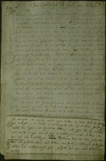
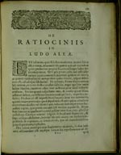
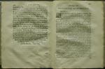
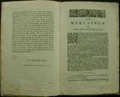

Christiaan Huygens. Facetten van een genie
De manuscripten
8 april 31 mei 2004
Tentoonstelling in de Universiteitsbibliotheek Leiden
3. Grondslagen van statistiek (1656)
Huygens’ belangstelling voor de kansrekening werd gewekt tijdens een verblijf te Parijs in 1655. Wellicht speelde het opkomende belang van de levensverzekeringswiskunde daarbij een rol. Maar de aanleiding voor de verhandeling Van rekeningh in spelen van geluck (over de berekening in kansspelen) vormden gokspelletjes met kaarten en dobbelstenen. Huygens berekent bijvoorbeeld de juiste inzetten van twee spelers die wedden dat er binnen een afgesproken aantal worpen met een dobbelsteen al dan niet minstens één zes gegooid wordt. Ofschoon hij een kans nauw koppelt aan een geldbedrag dat verloren of gewonnen kan worden, of dat ingezet moet worden, geeft Huygens hier voor het eerst een analytische formulering van de grondslagen der waarschijnlijkheidsrekening of statistiek.
|  |
3.1. Chr. Huygens, ‘Van Rekeningh in spelen van geluck’.
Manuscript, 1656. [HUG 45] –– Eerste blad van de autograaf. Bijlage (= OC 284) bij de brief van Huygens aan Frans van Schooten, gedateerd 20 april 1656 (= OC 282), waarin hij zijn verhandeling presenteert. |
| 3.2. Chr. Huygens, ‘De ratiociniis
in ludo aleae’, in: F. van Schooten, Exercitationum
Mathematicarum libri quinque. Lugd. Batav. 1657. [444 B 14] –– De tekst van Huygens werd door Frans van Schooten in het Latijn vertaald en in 1657 gepubliceerd in het vijfde boek van zijn wiskundige verzamelwerk Exercitationum mathematicorum. |
|
|  | |
|  | 3.3. Chr. Huygens, ‘Van Rekeningh in spelen van
geluck’, in: F. van Schooten, Mathematische oeffeningen.
Amsterdam 1660. [547 E 15] –– In 1660 werd Van Schootens werk eveneens in het Nederlands gepubliceerd, met de oorspronkelijke tekst van Huygens. Links: slot van Van Schootens ‘Tot den leser’, waarin hij niet zonder trots meedeelt dat Huygens net als hijzelf gebruikt maakt van de analytische methode, “welckers fondamenten hy eertijts van my geleert heeft”. Rechts: begin van Huygens’ brief aan Van Schooten, gedateerd 27 april 1756 (voor het slot: zie 3.4). |
|  | 3.4. Chr. Huygens, Van rekeningh in spelen
van geluck. Amsterdam 1895. [3746 A 2] –– Facsimile-editie van de Nederlandse versie uit 1660. Uitgebracht door de Algemeene Maatschappij van Levensverzekering en Lijfrente ter herinnering aan de tweehonderdste sterfdag van Christiaan Huygens. Ofschoon Johan de Witts Waerdye van lyf-rente naer proportie van los-renten (1671) als het fundament van de levensverzekeringswetenschap wordt beschouwd, was het Huygens die als eerste de kansrekening gebruikte om de waarschijnlijke levensduur van de mens te bepalen. |
| vorige pagina | volgende pagina |